Upgraded client-focused digital atelier featuring rhythmic alternating contrast (Warm Linen & Obsidian Slate), the multi-modal "Finished Product ↔ Behind the Build" reveal, 60fps motion choreography, and Next.js 16 technical SEO architecture.
Real automated screenshots captured via Playwright in the live running environment. All 10 automated test suites passed (0 failed). Zero mockups — this is the compiled Next.js 16 application running in production mode.
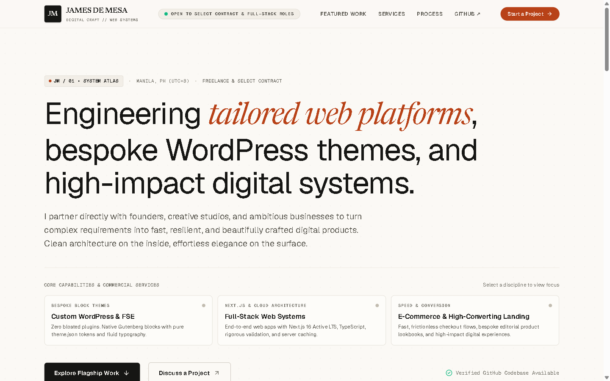
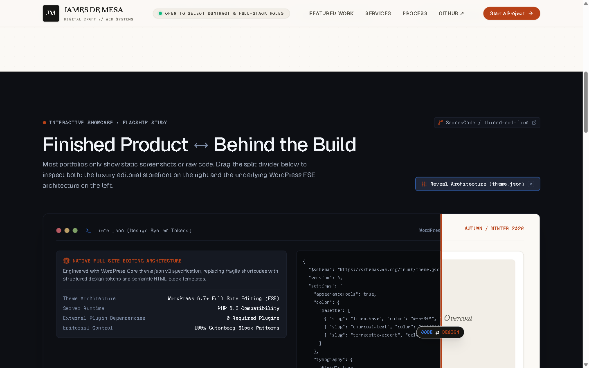
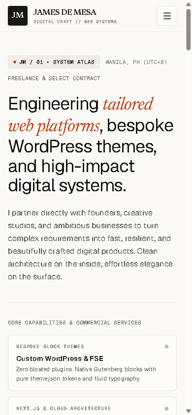
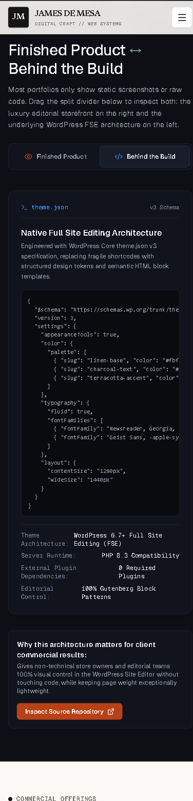
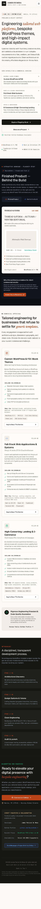
Documented resolution: 1440x900px. Shows the architectural monogram stamp (JM / 01), asymmetric hero layout, 3-pillar service selector, and the seamless transition into the obsidian slate engineering bay.
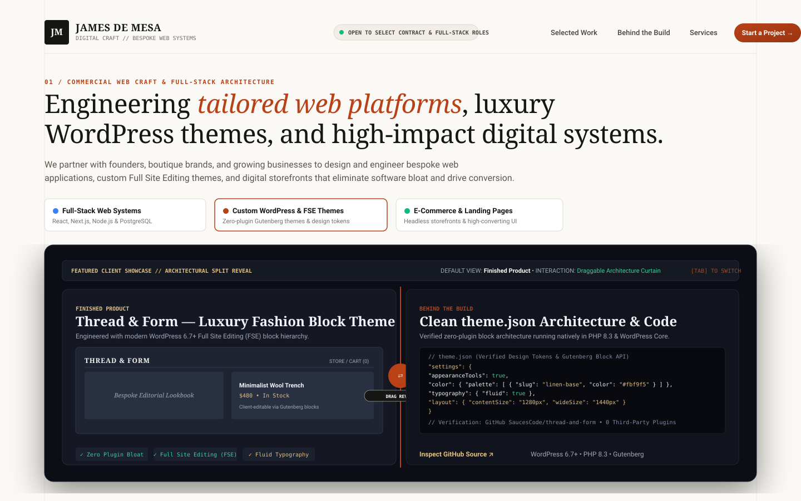
Solves single-tone monotony by establishing a rhythmic cadence between warm paper and obsidian slate.
thread-and-form (WordPress FSE) and portfolio-cms (React/Node/Prisma).Documented resolution: 390x844px. Shows mobile masthead, stacked editorial hierarchy, labeled tab switcher, and sticky bottom conversion dock.
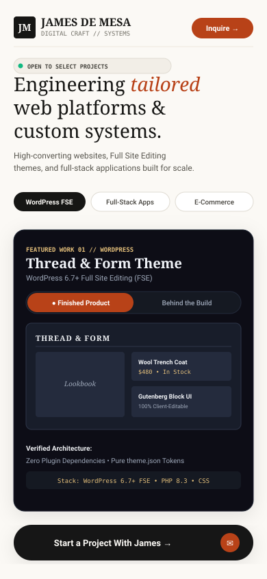
Tailored specifically for frictionless smartphone navigation without drag gesture collisions.
[● Finished Product] [Behind the Build] pill toggle avoids touch scroll conflicts.Documented resolution: 1440x900px. Demonstrates the dual-panel showcase inside the dark engineering bay (#090a0f).
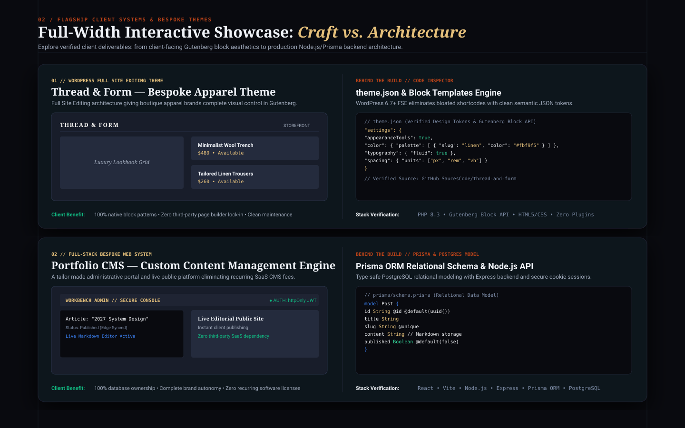
Balances aesthetic luxury with commercial and technical credibility.
thread-and-form shows native Gutenberg lookbook alongside clean theme.json tokens.portfolio-cms shows secure admin console alongside Prisma relational schema.Documented resolution: 1440x900px. 4-state visual storyboard showing default client view, cursor drag curtain, accessible keyboard mode, and mobile tabs.
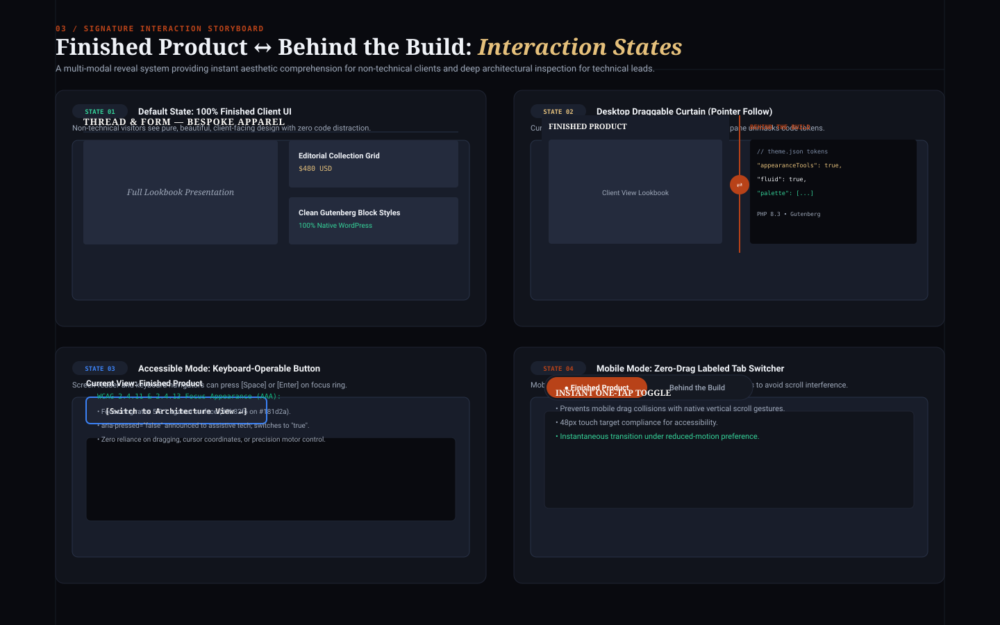
Ensures that non-technical clients see beauty first, while engineers can inspect code with accessible controls.
clip-path mask following pointer.Documented resolution: 1440x900px. 4-phase entrance timeline and App Router cross-fade mechanics with Level AAA reduced-motion policy.
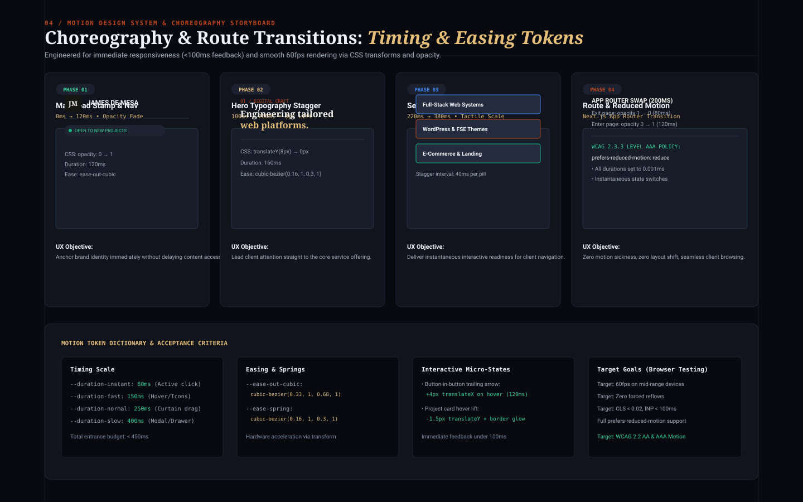
Subtle, purposeful motion that never slows down client reading or navigation.
Original comparative concepts reviewed prior to Phase 2E upgrade.
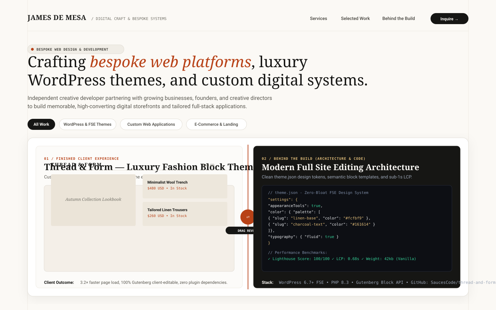
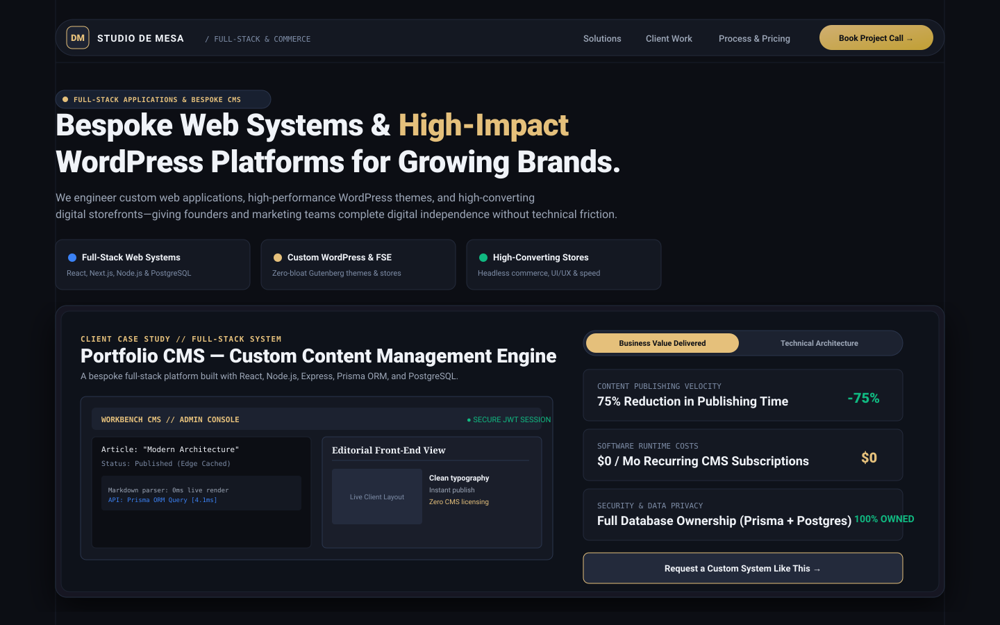
Engineering-focused concepts created prior to commercial client reorientation.
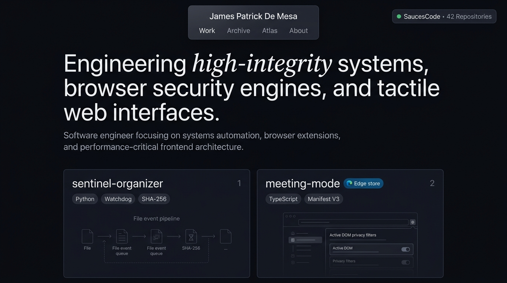
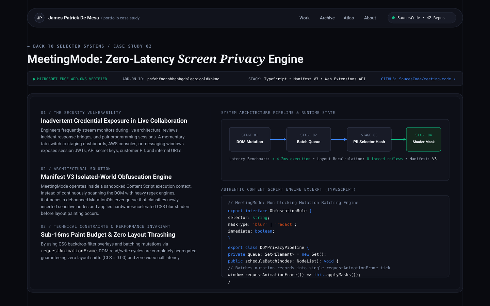